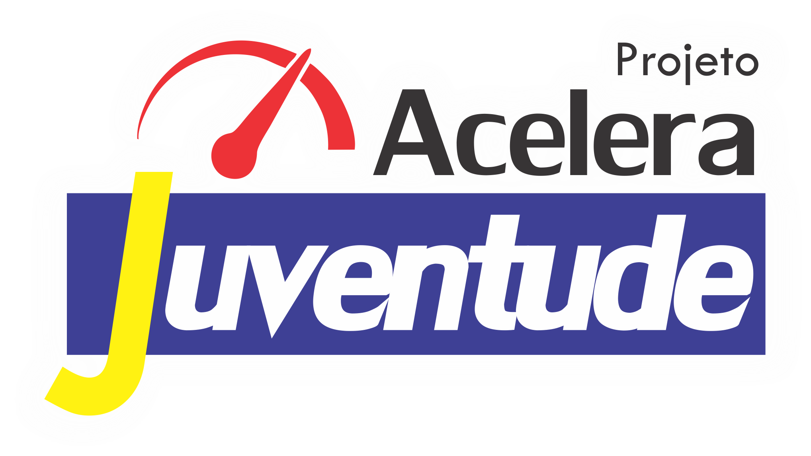

O Projeto Acelera Juventude tem alcançado diversas cidades, promovendo capacitação e oportunidades para jovens em diferentes estados. Com iniciativas educacionais e apoio ao desenvolvimento profissional, o programa fortalece comunidades e estimula o crescimento pessoal e coletivo. A cada nova cidade, mais alunos são incentivados a trilhar caminhos de sucesso, consolidando o impacto positivo do projeto na formação de futuras gerações.
Professor e Coordenador Tiago Ferraz faz homenagem aos professores na escola parceira Dom Vital localizado em Recife/PE
Parabéns aos alunos participantes do Projeto Acelera Juventude em Santa Rita/PB SUCESSO!!!
Parabéns aos alunos participantes do Projeto Acelera Juventude em Natal/RN SUCESSO!!!
Parabéns aos alunos participantes do Projeto Acelera Juventude em Mossoró/RN SUCESSO!!!
Parabéns aos alunos participantes do Projeto Acelera Juventude em Patos/PB SUCESSO!!!
Parabéns aos alunos participantes do Projeto Acelera Juventude em Ouricuri/PE SUCESSO!!!
Parabéns aos alunos participantes do Projeto Acelera Serra Talhada/PE SUCESSO!!!
Parabéns aos alunos participantes do Projeto Acelera Juventude em Crato/CE SUCESSO!!!
Parabéns aos alunos participantes do Projeto Acelera Juventude em Juazeiro da Bahia/BA SUCESSO!!!
Parabéns aos alunos participantes do Projeto Acelera Juventude em Juazeiro do Norte/CE SUCESSO!!!
Parabéns aos alunos participantes do Projeto Acelera Juventude em Patos/PB SUCESSO!!!
Parabéns aos alunos participantes do Projeto Acelera Juventude em Paulista/PE SUCESSO!!!
Parabéns aos alunos participantes do Projeto Acelera Juventude em Abreu e Lima/PE SUCESSO!!!
Parabéns aos alunos participantes do Projeto Acelera Juventude em Caicó/RN SUCESSO!!!
Parabéns aos alunos participantes do Projeto Acelera Juventude em Goiana/PE SUCESSO!!!
Parabéns aos alunos participantes do Projeto Acelera Juventude em Paulista/PE SUCESSO!!!
Parabéns aos alunos participantes do Projeto Acelera Juventude em Prazeres - Jaboatão/PE SUCESSO!!!
Parabéns aos alunos participantes do Projeto Acelera Juventude em Casa Amarela - Recife/PE SUCESSO!!!